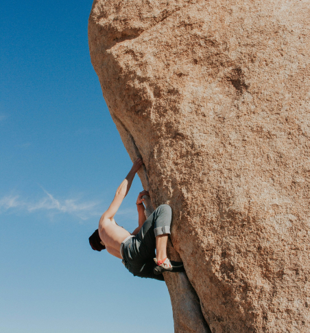

Discover the Thrill of Bouldering

What is Bouldering?
Bouldering is a form of rock climbing that is performed on small rock formations or artificial rock walls without the use of ropes or harnesses.
Unlike traditional climbing, bouldering focuses on short but intensive routes called "problems," typically keeping climbers within a safe distance from the ground while they navigate challenging sequences of moves.

Experience the perfect blend of physical challenge and mental puzzle-solving as you navigate routes close to the ground, with nothing but a crash pad and determination. Bouldering strips climbing down to its purest form, making it both accessible to beginners and endlessly challenging for experts.

Why Bouldering?
Whether you're a complete beginner or an experienced athlete, climbers of all ages can challenge themselves, celebrate each other's successes, and build lasting friendships.
Reasons to get started:
- Full-body workout
- Improves problem solving skills
- Builds mental resilience
- And much more!
Interested? Then find out how to get started with bouldering!